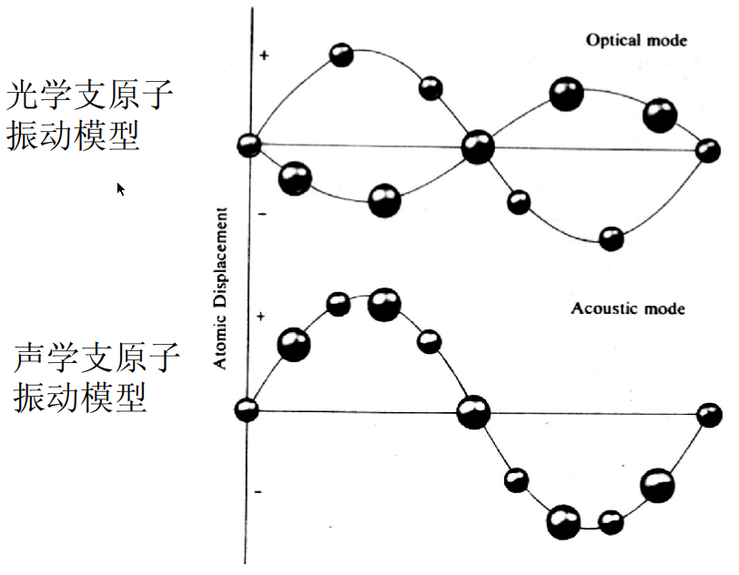

声子与色散关系复习-预习
理解不够，后续再学习补充
回顾色散关系求解过程
先说单链的色散关系，与之前波动方程求解类似，再大致说一遍，如图单链
第n原子的位移为 \(u_n\)，之间的势能关系
\[ F_n=\beta (u_n-u_{n-1} + u_{n+1}-u_n)\]
运动方程为：
\[F=ma \rightarrow m\frac{d^2u_n}{dt^2}=\beta(u_{n+1}+u_{n-1}-2u_{n})\]
这样的线性齐次方程求解为
\[u_{nq}=Ae^{i(\omega t-naq)} \qquad q=\frac{2\pi}{\lambda}\]
\(q\) 是波数，意思就是，位移与时间的关系有很多个解，\(q\) 可以取整数 \(1,2,3,...\)，\(n\) 指得还是第几个原子，具体为什么，看 波动方程求解2-分离变量法
\(\omega\) 是角频率，\(\lambda\) 是波长
如果再把这个方程代回运动方程，可以得到
\[\omega=2\sqrt{\frac{\beta}{m}}|sin\frac{1}{2}aq|\]
这个就是色散关系，可以看到原子频率与 \(n\) 无关，也就是说，所有原子以相同频率振动，区别仅仅是相位差，相邻原子的相位差为 \(qa\)
通常把 \(\omega\) 与 \(q\) 的关系成为色散关系
对于均匀弹性介质，运动方程为
\[\frac{d^2u}{dt^2}=\frac{E}{\rho}\frac{\partial^2u}{\partial x^2}\]
可以得到色散关系为
\[\omega=\sqrt{\frac{E}{\rho}}q\]
需要注意的是，这是格波，\(x\)只能取\(na\)格点位置的孤立值
格波的物理意义
前面求解中格波
\[u_{nq}=Ae^{i(\omega t-naq)}\]
原子振动以波的形式在晶体中传播，波的周期为 \(\frac{2\pi}{q}\)，即，原子相距 \(\frac{2\pi}{q}\) 时具有相同的振幅和相位

这里的波数 \(q=q+\frac{2\pi}{a}\times m\)
一维链的第一布里渊区即
\[-\frac{\pi}{a}< q < \frac{\pi}{a}\]
第一布里渊区指得就是，像上面那个图一样，这些原子正好完成一个完整的振动周期
这个方程 \(u_{nq}=Ae^{i(\omega t-naq)}\) 和 \(\omega=2\sqrt{\frac{\beta}{m}}|sin\frac{1}{2}aq|\)可以看到
- n固定，也就是只看某一个原子，q确定以后，随着时间t的变化，变化为正弦函数，改变q意味着，振动频率加快
- t固定，也就是某一时刻，看整个链的原子，也是个正弦函数，波数q也就意味着，整个链也会由一个完整周期变为2个周期、3个周期、……、q个周期
布里渊区
布里渊区一般在倒易空间，什么意思呢，其实就是\(2\pi\)除以现实中的向量，好处是后面的计算不至于波长出现无限
现实中的晶格之间向量为 \(\vec{a}_1 \quad \vec{a}_2\)，倒格子中的向量为 \(\vec{b}_1 \quad \vec{b}_2\)，他们的关系是
\[\vec{b}_i \times \vec{a}_j = 2\pi \delta_{ij}\]
\[\delta_{ij}=\begin{cases} 1 &(i=j)\\ 0\quad &(i\neq j) \end{cases}\]
色散关系图解
前面求解出来 \(\omega=2\sqrt{\frac{\beta}{m}}|sin\frac{1}{2}aq|\)，如果把图画出来
 ，
，
常见词
- 波长 (\(\lambda\))，一个周期的长度
- 波数 (\(q\)或\(k\))：每2\(\pi\)长度有多少个波长 \(q=\frac{2\pi}{\lambda}\)："角频率是单位时间内的角度变化，而波数为单位长度内的角度变化，因此波数即是空间上的角频率。波数对应矢量为波矢"。
- 波包：点波包，看维基百科的动图
- 群速度：波包传播的速度
- 相速度，相位传播的速度，两个的区别在于，很多波不是完全大小一样的，把几个大小不同的波放一块是一个波包，这个波包的传递速度是群速度，无论大波还是小波，都有相位，比如都有波峰，而波峰的速度就是相速度，这个不太好理解，点我看动图，所以一般相速度大于群速度
- 长波极限：波数\(q \rightarrow 0\)即波长无穷大
- 声学支：\(q\rightarrow 0 \quad \omega \rightarrow 0\)，只有三个，也就是对应整体的三个自由度 ，
- 态密度函数（PDOS）：单位频率间隔内的状态数(振动模式数目)，与声子色散关系的关联，看这里
本文作者：yuhldr
本文地址： https://yuhldr.github.io/posts/9553fedc.html
版权声明：转载请注明出处！